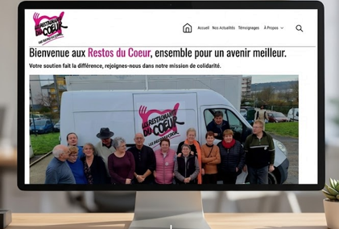
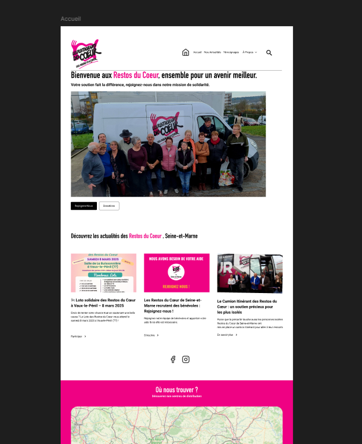
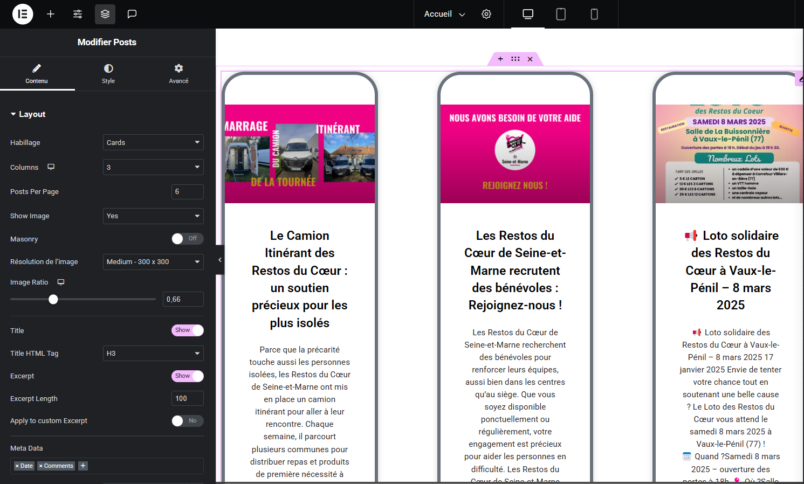
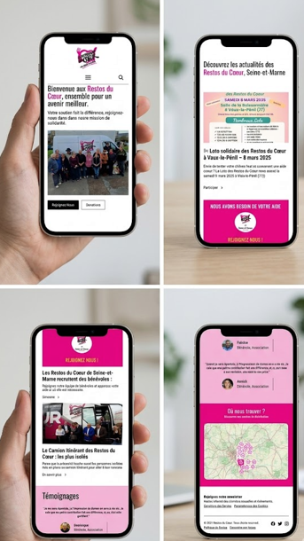
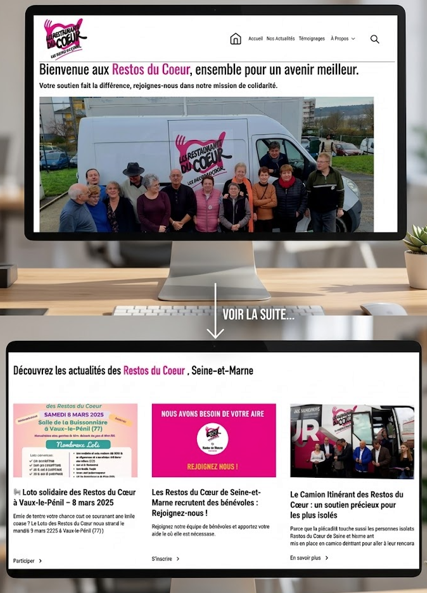

L'objectif de ce projet était de concevoir un site vitrine pour une antenne locale des Restos du Cœur. L'enjeu majeur était de respecter scrupuleusement l'identité visuelle historique de l'association tout en modernisant l'accès aux informations essentielles.
La mission : Rendre le site intuitif pour deux cibles différentes : les bénéficiaires (trouver un centre) et les donateurs/bénévoles (aider l'association).

Déclinaison de la charte graphique (Rouge/Blanc) sur Figma. Création d'une interface épurée mettant en avant les appels à l'action (Dons et Bénévolat).
Mise en place de la structure sous WordPress avec Elementor. Optimisation du responsive pour une consultation fluide sur tablette et mobile.
Définition des parcours utilisateurs : comment un bénévole s'inscrit-il ? Comment trouver les horaires d'une distribution ?
Conception haute-fidélité en intégrant des visuels forts pour illustrer les actions de l'association sur le terrain.

Intégration finale et optimisation du référencement pour que l'antenne soit facilement trouvable par les locaux.


